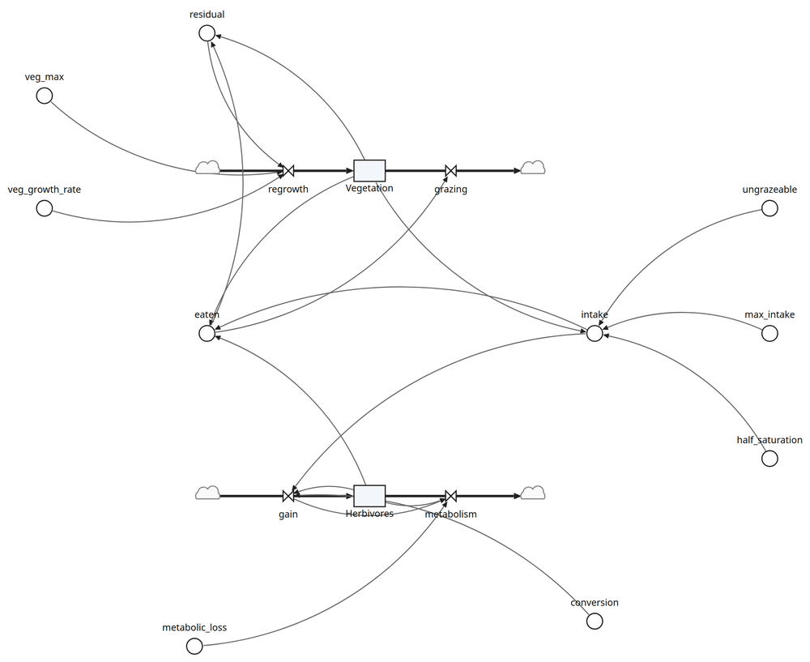

Herbivore-vegetation dynamics (Caughley)
Caughley's (1976) model of an interactive herbivore-vegetation system, with a hyperbolic functional response: vegetation (kg/ha) grows logistically after being grazed, herbivores (kg/ha) gain from what they eat and lose to metabolism. The two oscillate towards an equilibrium; herbivores die out if the vegetation cannot sustain them.
It opens with its plots and its sliders: move a slider and the model runs again.
Open in SimileFrom Norman Owen-Smith's book Introduction to Modeling in Wildlife and Resource Conservation (Blackwell, 2007), converted from its TrueBASIC program HVCAUGHLEY.tru and published here with his permission. The model spec: hvcaughley.json.
